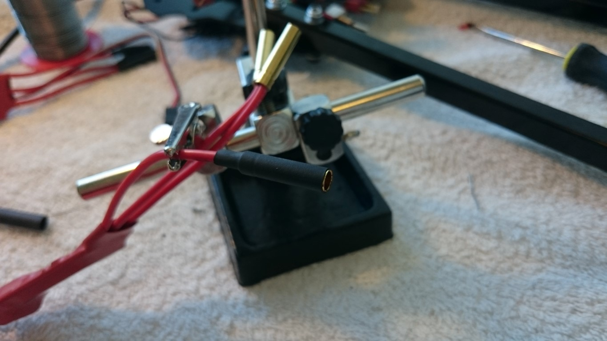

Alright so i got my parts. Lets get cracking. First up:
The frame
I have selected a light weight frame in aluminum for 2 reasons.
- Its more durable than carbon fiber so it might hold if (when) i crach it.
- Its less expensive than carbon fiber so I can afford to crach it.
I bought two sets from the start just in case I might be.. like i usualy am.
Assembly was easy peasy. Good fits and everything seems solid.
Control board
I whent with the K2 control board and, as expected, it fit right onto the mounts in the frame. The housing that comes with the unit reely helps proptect it and the tight mounts will help alot to keep the stability of the gyroscopes.
Power distrubution
Next up, a power distrubution board. This came with bullet connectors but as I already had alot of T-connectors laying around I decided to change them. The T-connectors couse less cable madness than the bullets but are on the other side heavier and more bulky. In retrospect I should probably have forgon the connectors all together and soldered the leads directly onto the board.
The screws did not fit with the control board on the other side of the card so I tied it down with strips.
ESC
The ESC comes with nice bullet connectors on the one motor side. Ill but my T-connector on the other side. Que the soldering iron! 
I initialy tried to feed the power cables through the arms of the frame. It turnes out it gets a little to close to comfert to the lower motor part so unfortunatly I had to resolve to ugly strips on the outside.
Bling and assessories
As I previusly stated. Im counting on putting this one in the ground a few times. So propeller guards: Propably a good idea!
The mounts did not match so yeah...
Im also counting on loosing track of whats front and back of this death machine so a few colored lights might not hurt either.
Done!
Ok, engines mounted. Lights are blinking. Props are spinning (very slowly!)
Its about now I start to make a few realizations.
- Those batteries I bought for extended flight time are huge. They weigh alot!
- The props the calculator told be I needed to carry those batteries are huge.
- The motors turning those props are reely quite a thing when you hold them in your hand.
And most but definitly not least:
- That is one big f* machine.
So basicly Im scared shitless of the thing.
Next up: Finding a big ass field without anyone to.. well.. behead.